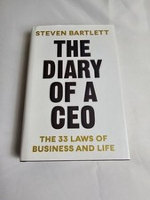

Library › Business & Startups
The Diary of a CEO — Summary & Key Lessons

The 33 laws of business and life — from the podcast chair where hundreds of the world's most successful people confessed their playbooks.
📖 OPEN THE FULL INTERACTIVE BREAKDOWN →🌐 Read it in Hindi, Hinglish, Gujarati, Tamil & 22 more languages — free, with audio.
💡 The Big Idea
Bartlett — Social Chain founder, dropout, and host of Europe's biggest podcast — distills hundreds of CEO/athlete/scientist interviews plus his own scar tissue into 33 laws across four pillars: THE SELF (fill your five buckets — knowledge, skills, network, resources, reputation — in that order; master the skill of learning; lean into failure), THE STORY (absurdity beats polish, frame beats fact, psychological moonshots — make the perception better, not just the product), THE PHILOSOPHY (small consistent improvements compound; discipline = goal value + reward psychology; plan for rainy days in sunny ones), and THE TEAM (culture is what you tolerate; hire barrel-raisers, not just talent; progress lives one uncomfortable conversation away). It's a modern operating manual where marketing psychology and personal discipline share one spine.
🧠 The 6 Key Lessons
Lesson 1: Fill the Five Buckets — In Order
Pillar 1: The Self — Law 1
Every professional's net worth flows from five buckets: KNOWLEDGE (what you know), SKILLS (what you can do), NETWORK (who you know), RESOURCES (what you have), REPUTATION (what the world thinks of you) — and the order matters: knowledge and skills are the source buckets that fill the rest, which is why raiding them early (chasing salary/resources before competence) builds careers on sand, while the first two, once full, refill everything else after any catastrophe (they're the only buckets no crash, scandal, or market can empty). Bartlett's corollaries: take the job that fills buckets one and two fastest, not the one that pays most at 22; audit decisions by bucket-impact ('this opportunity pays less but fills skills — take it'); and treat reputation as the lagging output it is — manufactured directly, it's brittle; earned through the upstream buckets, it compounds. The bucket audit is the career compass most people never draw.
📖 Example: Bartlett's own arc runs the law: dropping out with empty resource buckets but obsessively filling knowledge/skills (marketing psychology, consumer behavior) until Social Chain grew from a bedroom to a public company — and his interview evidence: the guests… Read the full example →
⚡ Do this: Draw your five buckets and honestly mark each level. Re-evaluate your current role: which buckets is it filling, which is it draining? Make one decision this month that prioritizes buckets one and two — a course, a harder project, a mentor-role — even at cost to bucket four.
Lesson 2: Absurdity, Frames & Psychological Moonshots
Pillar 2: The Story — Laws on Marketing Psychology
The story pillar is Bartlett's marketing doctorate compressed. ABSURDITY WINS: brains filter the expected and lock onto the bizarre — logical marketing is invisible marketing, and 'sensible' is the most crowded, expensive position available; useful absurdity (weird, delightful, slightly wrong) buys attention at a discount. FRAMES BEAT FACTS: identical facts land differently by presentation — price framing, order effects, context (the same wine tastes better with a higher price tag; the same feature thrills or bores depending on the story around it). PSYCHOLOGICAL MOONSHOTS: the biggest experience upgrades are often perception engineering, not product engineering — Uber's map didn't make cars faster; it made waiting FEEL controllable, deleting the anxiety that WAS the problem. The stack's discipline: identify the psychological job (control, status, certainty, belonging) your product actually does, then invest where perception moves — because customers experience feelings, not specifications.
📖 Example: Bartlett's exhibits: the Uber map as the canonical moonshot (perceived wait beats actual wait — the animation was worth more than fleet expansion); the famous elevator-mirror case (complaints about slow lifts solved not by faster lifts but by mirrors — the… Read the full example →
⚡ Do this: Find your moonshot: list your customers' top three NEGATIVE FEELINGS (not product flaws — feelings: anxiety, confusion, boredom) and design one perception fix for the worst one. Then run the absurdity pass on your next piece of marketing: if it would look at home among competitors', it's invisible — add the strange.
Lesson 3: Discipline Is an Equation, Not a Trait
Pillar 3: The Philosophy — Laws on Consistency & Discipline
Bartlett's formula demystifies willpower: DISCIPLINE = the VALUE of the goal + the REWARD of the pursuit − the COST of the pursuit. Stop moralizing lapses and start engineering terms: raise goal-value (reconnect to why it matters — vividly, regularly; vague goals produce vague discipline), raise pursuit-reward (make the process itself pleasurable — training partners, environments you love, streaks and progress markers), and lower pursuit-cost (reduce friction, shrink the unit of work, remove decision points). The companion laws: SMALL THINGS COMPOUND (his '1% philosophy' — the tiny daily improvements no one applauds are the entire mechanism of category-winning companies and transformed bodies alike), and PLAN IN THE SUN FOR THE RAIN (discipline systems built during motivation-highs are what carry you through the inevitable lows — never trust future-you to feel like it). The reframe's power: every discipline failure becomes a solvable engineering problem in one of three terms, rather than a character verdict.
📖 Example: Bartlett applies the equation to his own gym inconsistency: goal-value was abstract ('health'), pursuit-reward negative (he hated the gym), cost high (commute, decisions) — so he re-engineered all three: concrete goal (a filmed physical challenge with a… Read the full example →
⚡ Do this: Take your most-failed habit and score its three terms (goal-value, pursuit-reward, pursuit-cost) out of ten. Engineer the worst term this week: vivify the goal (write the specific why), inject one genuine pleasure into the process, or halve the friction. Re-score in a month — treat it as tuning, not testing yourself.
Lesson 4: Culture Is What You Tolerate — and Progress Needs Uncomfortable Conversations
Pillar 4: The Team — Laws on Culture & Leadership
The team pillar's core laws: CULTURE IS DEFINED BY WHAT YOU TOLERATE, not what you preach — every behavior a leader witnesses and ignores becomes policy (the late-comer unaddressed, the toxic top-performer retained: each broadcasts the real rules louder than any values poster); hire and protect BARREL-RAISERS (people who lift everyone's level — energy, standards, generosity) and remove barrel-lowerers regardless of individual talent, because team output is multiplicative, not additive. THE UNCOMFORTABLE CONVERSATION law: nearly all organizational (and relationship) stagnation is the accumulated interest on conversations someone avoided — feedback unshared, expectations unstated, conflicts politely buried; leaders' real throughput is measured in hard conversations had early, kindly, and directly. And LEADERSHIP IS CONSISTENCY: teams calibrate to your average behavior, not your best speech — the leader's daily emotional baseline IS the culture's thermostat. Bartlett's synthesis: companies are groups of people running on stories and tolerated behaviors; change those two and you've changed the company.
📖 Example: Bartlett's confession-cases from Social Chain: the star performer whose brilliance came wrapped in toxicity — tolerated too long because of the numbers, at a culture cost he only tallied after the exit interviews of the GOOD people who'd quietly left ('every… Read the full example →
⚡ Do this: Run the tolerance audit: list three behaviors you've witnessed and let slide — each is currently policy; address one this week. Write your avoided-conversations list and book the top one within seven days (kind, direct, early). And in your next hire, weight the barrel question explicitly: 'will this person raise everyone's level, or just their own numbers?'
Lesson 5: The Standout Skill: Communication Is the Multiplier
Part 2: The Skills
Bartlett argues that in the age of AI and automation, the one skill that multiplies everything else is communication — the ability to take an idea, an emotion or a plan and make another human actually feel it. The best ideas die in the hands of people who can't sell them; average ideas conquer the world in the hands of people who can. His formula for sticky communication: brevity (short beats long), specificity (numbers and stories beat adjectives), and emotion (people remember how you made them feel). Communication is not a soft skill — it is the highest-leverage hard skill there is.
📖 Example: Bartlett shares how the best entrepreneurs he interviewed could explain their entire business in one sentence a child would understand — while their competitors drowned in jargon. The one-sentence business got the investment, the customer, the press. Read the full example →
⚡ Do this: Take your current project and write a one-sentence explanation a 10-year-old would understand. Cut every word that isn't doing work.
Lesson 6: Routine Over Motivation: The Diary of a CEO Discipline
Part 3: The Habits
Bartlett's interviews with world-class performers reveal a pattern: none of them rely on motivation — they rely on routine. Motivation is a feeling that comes and goes; routine is a decision made once that removes the need for daily willpower. The diary-keeping habit itself (writing down the day's highs and lows) is his evidence: what gets measured and reflected on improves. The formula is simple: decide your non-negotiables in advance, attach them to triggers (same time, same place), and protect them from the mood of the moment. Discipline isn't doing what you feel like; it's doing what you decided — and routine is how you make that automatic.
📖 Example: Bartlett noticed every high performer he studied had a fixed morning ritual — the same wake time, the same first hour, the same practice — so that excellence never depended on 'feeling like it'. On their worst days, the routine carried them. Read the full example →
⚡ Do this: Choose one daily non-negotiable (exercise, writing, deep work) and attach it to a fixed trigger — same time, same place, for the next 21 days. No exceptions.
✅ 5-Step Action Plan
- Audit the five buckets; make one knowledge/skills-first decision.
- Design one psychological moonshot; add absurdity to invisible marketing.
- Engineer your discipline equation's weakest term.
- Address one tolerated behavior; book the top avoided conversation.
- Hire and protect barrel-raisers; let consistency set the thermostat.
⚠️ When This Doesn't Work
Bartlett's founder stories are inspiring — and survivorship-heavy: every chapter is a winner, and the diary format makes the loser's story invisible until it's a documentary. Sam Bankman-Fried had the most compelling founder narrative of his generation — genius, altruism, empire — and the story was the product; the exchange had no real edge beneath it. Read founder diaries for patterns, not for permission. The narrator always leaves out the chapter where they were wrong.
💀 The Graveyard Proves It
🪙 Sam Bankman-Fried — The $32B Empire on a Spreadsheet Nobody Kept. Burn: $32B → zero in 10 days. Read the full case study →
💬 Best Quotes from The Diary of a CEO
- “The five buckets: knowledge, skills, network, resources, reputation — fill them in order, and never let anyone rob the first two.”
- “Absurdity is a competitive advantage — the logical route is the crowded route.”
- “Discipline is not a personality trait. It's the value of the goal, plus the reward of the pursuit, minus the cost of the pursuit.”
Interactive version: mark lessons as read, listen in your language, share quote cards.